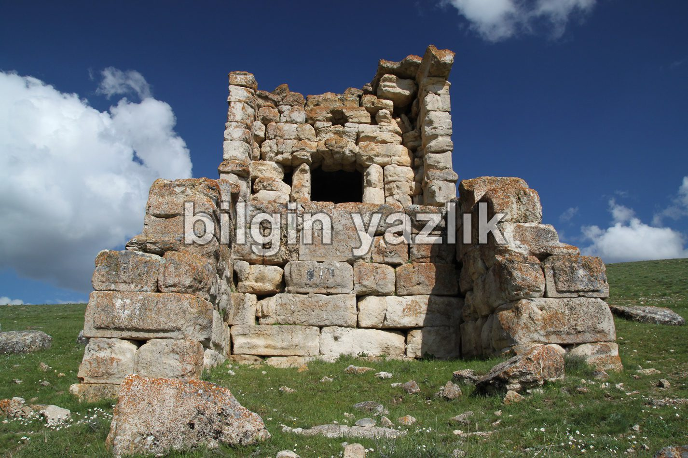
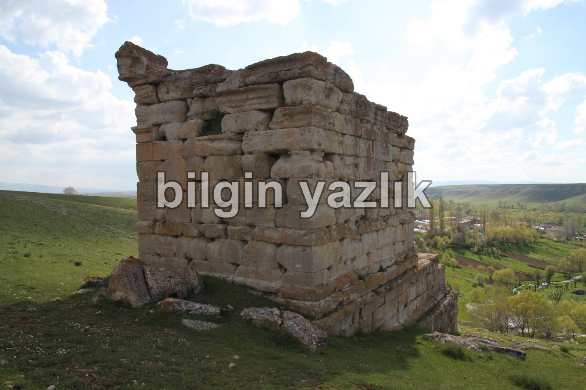

Panlı Anıt Mezarı
Kayseri – Pınarbaşı yolunda seyrederken Bünyan’a ayrılan yola sapıyoruz, yol ayrımından sonra karşımıza çıkan ilk yerleşim yerinde Panlı Anıt Mezarı tabelasından içeriye giriyoruz. Bu yol bizi doğrudan Panlı köyüne ve Panlı Anıt Mezarına ulaştırıyor. Anıt mezara 500 mt mesafeye kadar otomobil ile rahatça gidilebilir ancak gerisini yürümek gerekiyor. Anıt mezar Panlı köyünün doğu yamacında köyü kuşbakışı görecek bir noktada konumlanıyor. Anıt mezar hala dipdiri ayakta duruyor, kimi kaynaklara göre bir “Sunak” olan bu anıt üzerinde herhangi bir medeniyet izine rastlamadım (yazı, resim vb) Bu yapının hangi medeniyet döneminde inşa edildiği ya da hangi amaçla kullanıldığı hakkında bilgi sahibi olan varsa ve bunu bizimle paylaşırsa memnun olurum. Anıtın eteklerinde kayaların arasından bol miktarda su çıkıyor ve su köylü tarafından içiliyor. Anıtım çevresi tamamen yayla olup havası bir harika idi.
Anıt mezarın tam koordinatları:
38 D 46′ 10” N
36 D 08′ 44” E


Bu yazı taliyol arşivinden taşınmıştır. · özgün kayıt